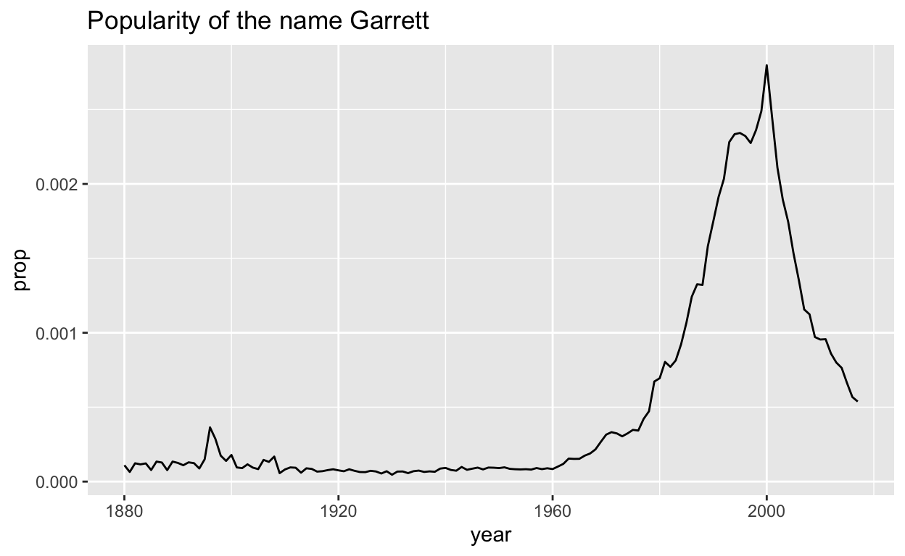
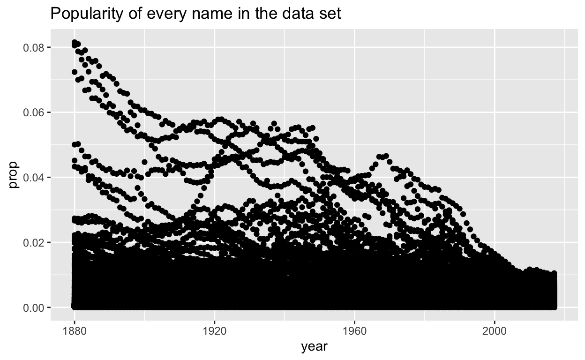
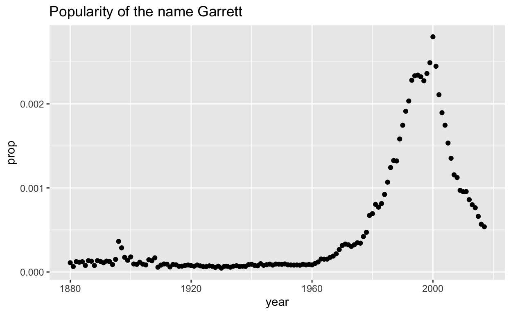
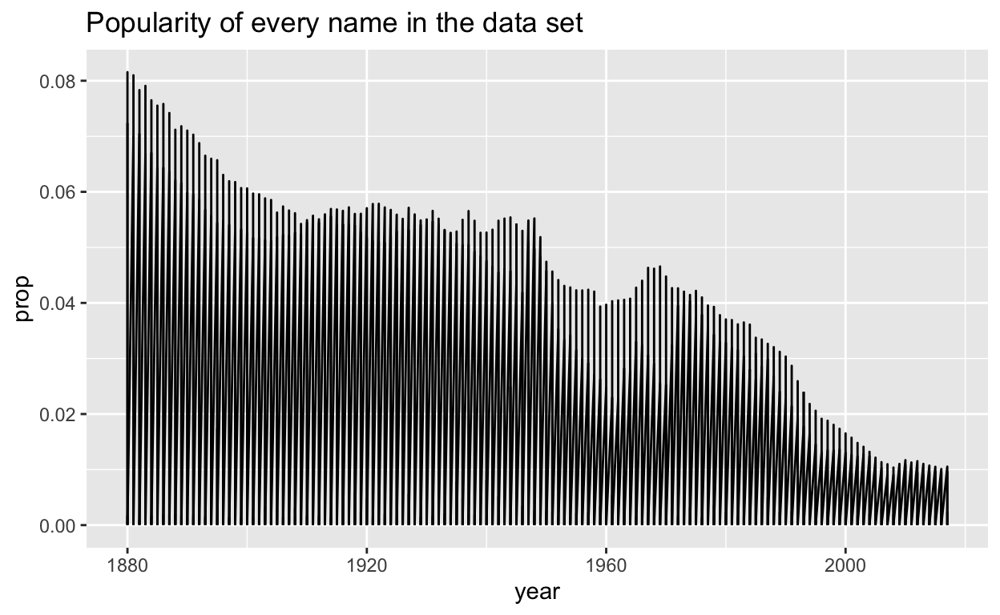

Welcome
In this case study, you will explore the popularity of your own name over time. Along the way, you will master some of the most useful functions for isolating variables, cases, and values within a data frame:
select()andfilter(), which let you extract rows and columns from a data framearrange(), which lets you reorder the rows in your data%>%, which organizes your code into reader-friendly “pipes”
This tutorial uses the core tidyverse
packages, including ggplot2, tibble, and dplyr, as well as the
babynames package. All of these packages have been
pre-installed and pre-loaded for your convenience.
Click the Next Topic button to begin.
Your name
The history of your name
You can use the data in babynames to make graphs like
this, which reveal the history of a name, perhaps your name.

But before you do, you will need to trim down babynames.
At the moment, there are more rows in babynames than you
need to build your plot.
An example
To see what I mean, consider how I made the plot above: I began with the entire data set, which if plotted as a scatterplot would’ve looked like this.

I then narrowed the data to just the rows that contain my name, before plotting the data with a line geom. Here’s how the rows with just my name look as a scatterplot.

If I had skipped this step, my line graph would’ve connected all of the points in the large data set, creating an uninformative graph.

Your goal in this section is to repeat this process for your own name (or a name that you choose). Along the way, you will learn a set of functions that isolate information within a data set.
Isolating data
This type of task occurs often in Data Science: you need to extract data from a table before you can use it. You can do this task quickly with three functions that come in the dplyr package:
- select() - which extracts columns from a data frame
- filter() - which extracts rows from a data frame
- arrange() - which moves important rows to the top of a data frame
Each function takes a data frame or tibble as it’s first argument and returns a new data frame or tibble as its output.
select()
select() extracts columns of a data frame and returns
the columns as a new data frame. To use select(), pass it
the name of a data frame to extract columns from, and then the names of
the columns to extract. The column names do not need to appear in
quotation marks or be prefixed with a $;
select() knows to find them in the data frame that you
supply.
Exercise - select()
Use the example below to get a feel for select(). Can
you extract just the name column? How about the
name and year columns? How about all of the
columns except prop?
select(babynames, name, sex)# A tibble: 1,924,665 × 2
name sex
<chr> <chr>
1 Mary F
2 Anna F
3 Emma F
4 Elizabeth F
5 Minnie F
6 Margaret F
7 Ida F
8 Alice F
9 Bertha F
10 Sarah F
# ℹ 1,924,655 more rowsselect(babynames, name)
select(babynames, name, year)
select(babynames, year, sex, name, n)select() helpers
You can also use a series of helpers with select(). For
example, if you place a minus sign before a column name,
select() will return every column but that column. Can you
predict how the minus sign will work here?
select(babynames, -c(n, prop))The table below summarizes the other select() helpers
that are available in dplyr. Study it, and then click “Continue” to test
your understanding.
| Helper Function | Use | Example |
|---|---|---|
| - | Columns except | select(babynames, -prop) |
| : | Columns between (inclusive) | select(babynames, year:n) |
| contains() | Columns that contains a string | select(babynames, contains("n")) |
| ends_with() | Columns that ends with a string | select(babynames, ends_with("n")) |
| matches() | Columns that matches a regex | select(babynames, matches("n")) |
| num_range() | Columns with a numerical suffix in the range | Not applicable with babynames |
| one_of() | Columns whose name appear in the given set | select(babynames, one_of(c("sex", "gender"))) |
| starts_with() | Columns that starts with a string | select(babynames, starts_with("n")) |
select() quiz
filter()
filter() extracts rows from a data frame and returns
them as a new data frame. As with select(), the first
argument of filter() should be a data frame to extract rows
from. The arguments that follow should be logical tests;
filter() will return every row for which the tests return
TRUE.
filter in action
For example, the code chunk below returns every row with the name
“Sea” in babynames.
filter(babynames, name == "Sea")## # A tibble: 4 × 5
## year sex name n prop
## <dbl> <chr> <chr> <int> <dbl>
## 1 1982 F Sea 5 0.00000276
## 2 1985 M Sea 6 0.00000312
## 3 1986 M Sea 5 0.0000026
## 4 1998 F Sea 5 0.00000258Logical tests
To get the most from filter, you will need to know how to use R’s logical test operators, which are summarised below.
| Logical operator | tests | Example |
|---|---|---|
| > | Is x greater than y? |
x > y |
| >= | Is x greater than or equal to y? |
x >= y |
| < | Is x less than y? |
x < y |
| <= | Is x less than or equal to y? |
x <= y |
| == | Is x equal to y? |
x == y |
| != | Is x not equal to y? |
x != y |
| is.na() | Is x an NA? |
is.na(x) |
| !is.na() | Is x not an NA? |
!is.na(x) |
Exercise - Logical Operators
See if you can use the logical operators to manipulate our code below to show:
- All of the names where prop is greater than or equal to 0.08
- All of the children named “Khaleesi”
- All of the names that have a missing value for
n(Hint: this should return an empty data set).
filter(babynames, name == "Sea")filter(babynames, prop >= 0.08)
filter(babynames, name == "Khaleesi")
filter(babynames, is.na(n))Two common mistakes
When you use logical tests, be sure to look out for two common mistakes. One appears in each code chunk below. Can you find them? When you spot a mistake, fix it and then run the chunk to confirm that it works.
filter(babynames, name = "Sea")filter(babynames, name == "Sea")filter(babynames, name == Sea)filter(babynames, name == "Sea")Two mistakes - Recap
When you use logical tests, be sure to look out for these two common mistakes:
- using
=instead of==to test for equality. - forgetting to use quotation marks when comparing strings,
e.g.
name == Abby, instead ofname == "Abby"
Combining tests
If you provide more than one test to filter(),
filter() will combine the tests with an
and statement (&): it will only return
the rows that satisfy all of the tests.
To combine multiple tests in a different way, use R’s Boolean operators. For example, the code below will return all of the children named Sea or Anemone.
filter(babynames, name == "Sea" | name == "Anemone")## # A tibble: 5 × 5
## year sex name n prop
## <dbl> <chr> <chr> <int> <dbl>
## 1 1982 F Sea 5 0.00000276
## 2 1985 M Sea 6 0.00000312
## 3 1986 M Sea 5 0.0000026
## 4 1998 F Sea 5 0.00000258
## 5 2012 F Anemone 6 0.0000031Boolean operators
You can find a complete list or base R’s boolean operators in the table below.
| Boolean operator | represents | Example |
|---|---|---|
| & | Are both A and B true? |
A & B |
| |
Are one or both of A and B
true? |
A | B |
| ! | Is A not true? |
!A |
| xor() | Is one and only one of A and B
true? |
xor(A, B) |
| %in% | Is x in the set of a, b, and
c? |
x %in% c(a, b, c) |
| any() | Are any of A, B, or
C true? |
any(A, B, C) |
| all() | Are all of A, B, or
C true? |
all(A, B, C) |
Exercise - Combining tests
Use Boolean operators to alter the code chunk below to return only the rows that contain:
- Girls named Sea
- Names that were used by exactly 5 or 6 children in 1880
- Names that are one of Acura, Lexus, or Yugo
filter(babynames, name == "Sea" | name == "Anemone")# A tibble: 5 × 5
year sex name n prop
<dbl> <chr> <chr> <int> <dbl>
1 1982 F Sea 5 0.00000276
2 1985 M Sea 6 0.00000312
3 1986 M Sea 5 0.0000026
4 1998 F Sea 5 0.00000258
5 2012 F Anemone 6 0.0000031 filter(babynames, name == "Sea", sex == "F")
filter(babynames, n == 5 | n == 6, year == 1880)
filter(babynames, name %in% c("Acura", "Lexus", "Yugo"))Two more common mistakes
Logical tests also invite two common mistakes that you should look out for. Each is displayed in a code chunk below, one produces an error and the other is needlessly verbose. Diagnose the chunks and then fix the code.
filter(babynames, 10 < n < 20)filter(babynames, 10 < n, n < 20)filter(babynames, n == 5 | n == 6 | n == 7 | n == 8 | n == 9)filter(babynames, n %in% c(5, 6, 7, 8, 9))Two more common mistakes - Recap
When you combine multiple logical tests, be sure to look out for these two common mistakes:
- Collapsing multiple logical tests into a single test without using a boolean operator
- Using repeated
|instead of%in%, e.g.x == 1 | x == 2 | x == 3instead ofx %in% c(1, 2, 3)
arrange()
arrange() returns all of the rows of a data frame
reordered by the values of a column. As with select(), the
first argument of arrange() should be a data frame and the
remaining arguments should be the names of columns. If you give
arrange() a single column name, it will return the rows of
the data frame reordered so that the row with the lowest value in that
column appears first, the row with the second lowest value appears
second, and so on. If the column contains character strings,
arrange() will place them in alphabetical order.
Exercise - arrange()
Use the code chunk below to arrange babynames by n. Can
you tell what the smallest value of n is?
arrange(babynames, n)Tie breakers
If you supply additional column names, arrange() will
use them as tie breakers to order rows that have identical values in the
earlier columns. Add to the code below, to make prop a tie
breaker. The result should first order rows by value of n
and then reorder rows within each value of n by values of
prop.
arrange(babynames, n)# A tibble: 1,924,665 × 5
year sex name n prop
<dbl> <chr> <chr> <int> <dbl>
1 1880 F Adelle 5 0.0000512
2 1880 F Adina 5 0.0000512
3 1880 F Adrienne 5 0.0000512
4 1880 F Albertine 5 0.0000512
5 1880 F Alys 5 0.0000512
6 1880 F Ana 5 0.0000512
7 1880 F Araminta 5 0.0000512
8 1880 F Arthur 5 0.0000512
9 1880 F Birtha 5 0.0000512
10 1880 F Bulah 5 0.0000512
# ℹ 1,924,655 more rowsarrange(babynames, n, prop)desc
If you would rather arrange rows in the opposite order, i.e. from
large values to small values, surround a column name
with desc(). arrange() will reorder the rows
based on the largest values to the smallest.
Add a desc() to the code below to display the most
popular name for 2017 (the largest year in the dataset) instead of 1880
(the smallest year in the dataset).
arrange(babynames, year, desc(prop))# A tibble: 1,924,665 × 5
year sex name n prop
<dbl> <chr> <chr> <int> <dbl>
1 1880 M John 9655 0.0815
2 1880 M William 9532 0.0805
3 1880 F Mary 7065 0.0724
4 1880 M James 5927 0.0501
5 1880 M Charles 5348 0.0452
6 1880 M George 5126 0.0433
7 1880 M Frank 3242 0.0274
8 1880 F Anna 2604 0.0267
9 1880 M Joseph 2632 0.0222
10 1880 M Thomas 2534 0.0214
# ℹ 1,924,655 more rowsarrange(babynames, desc(year), desc(prop))Think you have it? Click Continue to test yourself.
arrange() quiz
Which name was the most popular for a single gender in a single year?
In the code chunk below, use arrange() to make the row with
the largest value of prop appear at the top of the data
set.
arrange(babynames, desc(prop))Now arrange babynames so that the row with the largest
value of n appears at the top of the data frame. Will this
be the same row? Why or why not?
arrange(babynames, desc(n))
# The number of children represented by each proportion grew
# over time as the population grew %>%
Steps
Notice how each dplyr function takes a data frame as input and returns a data frame as output. This makes the functions easy to use in a step by step fashion. For example, you could:
- Filter babynames to just boys born in 2017
- Select the
nameandncolumns from the result - Arrange those columns so that the most popular names appear near the top.
boys_2017 <- filter(babynames, year == 2017, sex == "M")
boys_2017 <- select(boys_2017, name, n)
boys_2017 <- arrange(boys_2017, desc(n))
boys_2017## # A tibble: 14,160 × 2
## name n
## <chr> <int>
## 1 Liam 18728
## 2 Noah 18326
## 3 William 14904
## 4 James 14232
## 5 Logan 13974
## 6 Benjamin 13733
## 7 Mason 13502
## 8 Elijah 13268
## 9 Oliver 13141
## 10 Jacob 13106
## # ℹ 14,150 more rowsRedundancy
The result shows us the most popular boys names from 2017, which is
the most recent year in the data set. But take a look at the code. Do
you notice how we re-create boys_2017 at each step so we
will have something to pass to the next step? This is an inefficient way
to write R code.
You could avoid creating boys_2017 by nesting your
functions inside of each other, but this creates code that is hard to
read:
arrange(select(filter(babynames, year == 2017, sex == "M"), name, n), desc(n))The dplyr package provides a third way to write sequences of functions: the pipe.
%>%
The pipe operator %>% performs an extremely simple
task: it passes the result on its left into the first argument of the
function on its right. Or put another way, x %>% f(y) is
the same as f(x, y). This piece of code punctuation makes
it easy to write and read series of functions that are applied in a step
by step way. For example, we can use the pipe to rewrite our code
above:
babynames %>%
filter(year == 2017, sex == "M") %>%
select(name, n) %>%
arrange(desc(n))## # A tibble: 14,160 × 2
## name n
## <chr> <int>
## 1 Liam 18728
## 2 Noah 18326
## 3 William 14904
## 4 James 14232
## 5 Logan 13974
## 6 Benjamin 13733
## 7 Mason 13502
## 8 Elijah 13268
## 9 Oliver 13141
## 10 Jacob 13106
## # ℹ 14,150 more rowsAs you read the code, pronounce %>% as “then”. You’ll
notice that dplyr makes it easy to read pipes. Each function name is a
verb, so our code resembles the statement, “Take babynames,
then filter it by name and sex, then select the name
and n columns, then arrange the results by descending values of
n.”
dplyr also makes it easy to write pipes. Each dplyr function returns a data frame that can be piped into another dplyr function, which will accept the data frame as its first argument. In fact, dplyr functions are written with pipes in mind: each function does one simple task. dplyr expects you to use pipes to combine these simple tasks to produce sophisticated results.
Exercise - Pipes
I’ll use pipes for the remainder of the tutorial, and I will expect you to as well. Let’s practice a little by writing a new pipe in the chunk below. The pipe should:
- Filter babynames to just the girls that were born in 2017
- Select the
nameandncolumns - Arrange the results so that the most popular names are near the top.
Try to write your pipe without copying and pasting the code from above.
babynames %>%
filter(year == 2017, sex == "F") %>%
select(name, n) %>%
arrange(desc(n))Your name
You’ve now mastered a set of skills that will let you easily plot the
popularity of your name over time. In the code chunk below, use a
combination of dplyr and ggplot2 functions with %>%
to:
- Trim
babynamesto just the rows that contain your name and your sex - Trim the result to just the columns that will appear in your graph (not strictly necessary, but useful practice)
- Plot the results as a line graph with
yearon the x axis andpropon the y axis
Note that the first argument of ggplot() takes a data
frame, which means you can add ggplot() directly to the end
of a pipe. However, you will need to switch from %>% to
+ to finish adding layers to your plot.
babynames %>%
filter(name == "Garrett", sex == "M") %>%
select(year, prop) %>%
ggplot() +
geom_line(aes(x = year, y = prop)) +
labs(title = "Popularity of the name Garrett")Recap
Together, select(), filter(), and
arrange() let you quickly find information displayed within
your data.
The next tutorial will show you how to derive information that is implied by your data, but not displayed within your data set.
In that tutorial, you will continue to use the %>%
operator, which is an essential part of programming with the dplyr
library.
Pipes help make R expressive, like a spoken language. Spoken languages consist of simple words that you combine into sentences to create sophisticated thoughts.
In the tidyverse, functions are like words: each does one simple task
well. You can combine these tasks into pipes with %>% to
perform complex, customized procedures.